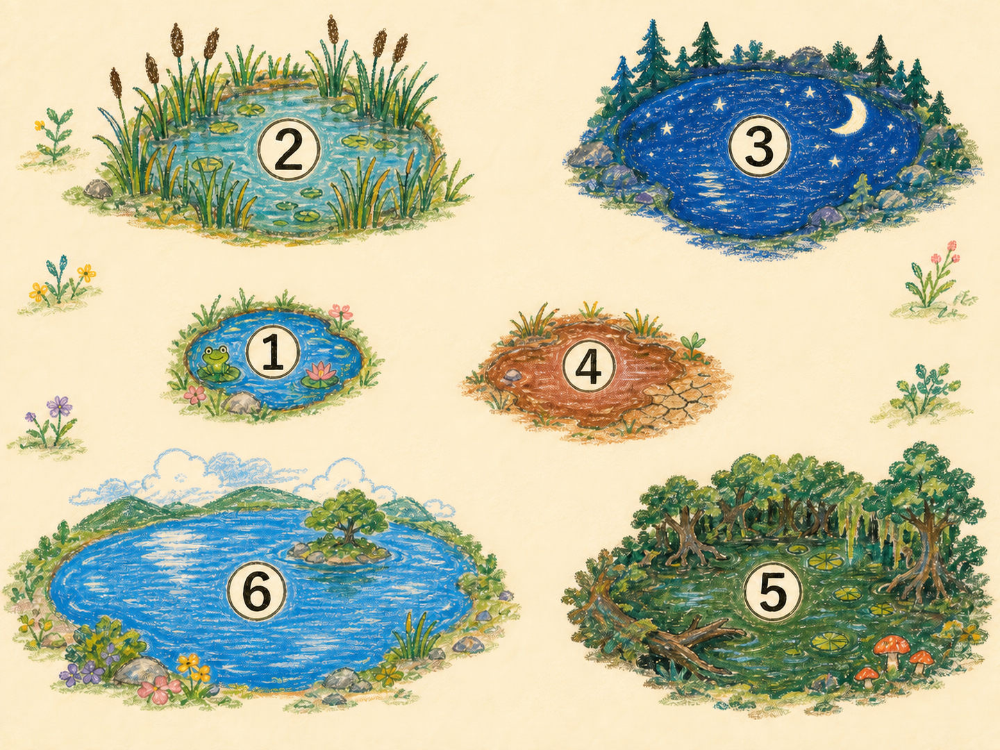

🌱 春
休眠卵が孵化。魚も目覚め、春の増殖と捕食を計算。
冬の翼に卵を託し、千年の水辺をつなげ。
ベストスコア：—
鳥の移動ルートを決めて休眠卵を運ぼう。
小鳥は卵を運ぶだけで食べず、メダカを少し食べる。中鳥はメダカを、大鳥はドンコを食べるぞ。

湖のそばのゲージは、ミジンコの目標達成度です。
休眠卵が孵化。魚も目覚め、春の増殖と捕食を計算。
最も盛んに繁殖。夏の増殖と捕食をもう一度計算。
秋の増殖と捕食後、危機なら休眠卵を多く残す。
水中生物は休眠。鳥の捕食・移動・卵運びを計算。
1年＝春→夏→秋→冬の順。春夏秋は各季節ごとに「増殖→捕食→魚の繁殖」を繰り返します。
上限に近いほど増えにくいロジスティック型です。季節の基本率 r は春 0.16 / 夏 0.20 / 秋 0.12。水場補正 G（赤土 0.88 など）を掛けます。
ratio = 獲物数 ÷ 捕食者数
| ratio（獲物：捕食者） | level | 意味 |
|---|---|---|
| 8 以下 | 0 | エサ不足 → 捕食しない |
| 8 超〜40 以下 | 0.5 | やや不足 |
| 40 超〜80 以下 | 1.0 | 標準 |
| 80 超 | 1.1 | 豊富 |
その後、メダカ上限＝水場上限÷800、ドンコ上限＝水場上限÷10000 で打ち切ります。
per = ルート上の獲物合計 ÷ 羽数（小鳥・中鳥の獲物＝メダカ、大鳥＝ドンコ）
| per（1羽あたり獲物） | level |
|---|---|
| 2 未満 | 0（飢餓） |
| 2 以上〜12 未満 | 0.5 |
| 12 以上〜40 未満 | 1.0 |
| 40 以上 | 1.15 |
※ 小鳥は休眠卵を運ぶだけで、卵は食べません。増え方はメダカの level のみです。
手動セーブ枠です（この端末のブラウザに保存）。自動セーブとは別枠です。ルート実験の前に保存しておくと安心です。
魚のいない「はじまりの池」でミジンコが増え始めました。ほかの湖や沼には魚が待ち構えています。
鳥の往復先を選び、冬に休眠卵を運ばせてください。全6水場のミジンコを上限の95％以上にした年数がスコアです。より少ない年数ほど高スコア！